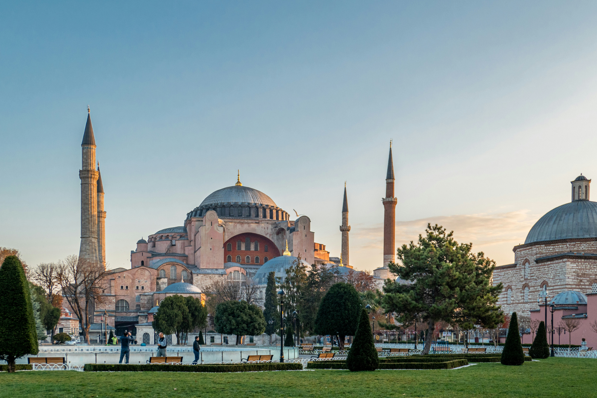

Sultanahmet · l’Istanbul imperiale
01 · L’Istanbul imperiale
Sultanahmet
Santa Sofia, la Moschea Blu e i grandi simboli della città storica aprono il viaggio. Ma Istanbul non vive soltanto in superficie: sotto le sue strade si nascondono ambienti bizantini che cambiano completamente atmosfera.